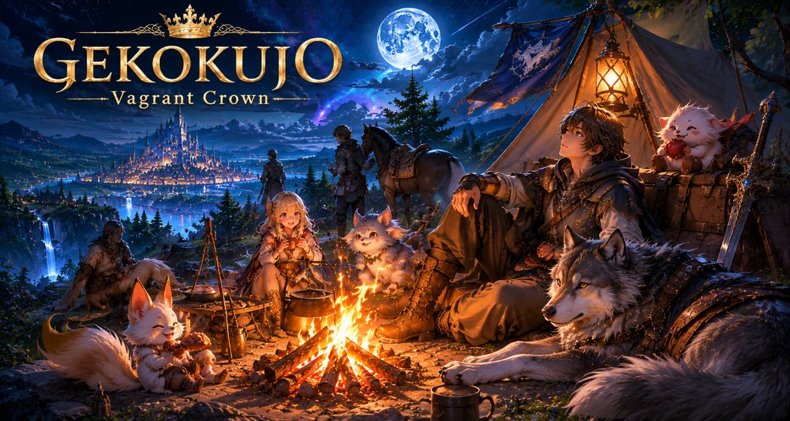
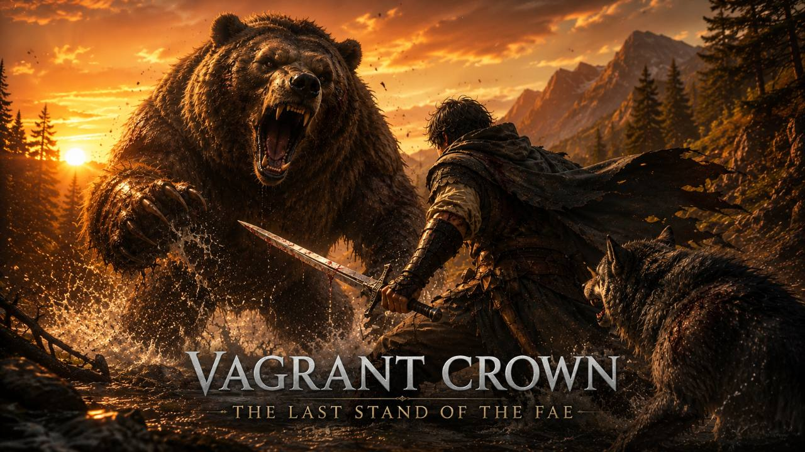
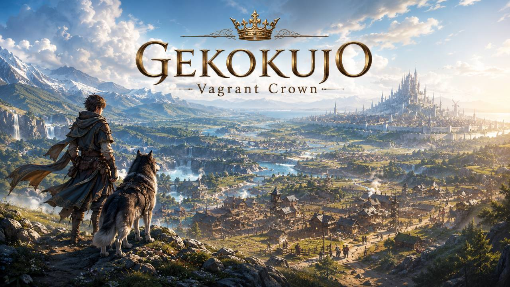
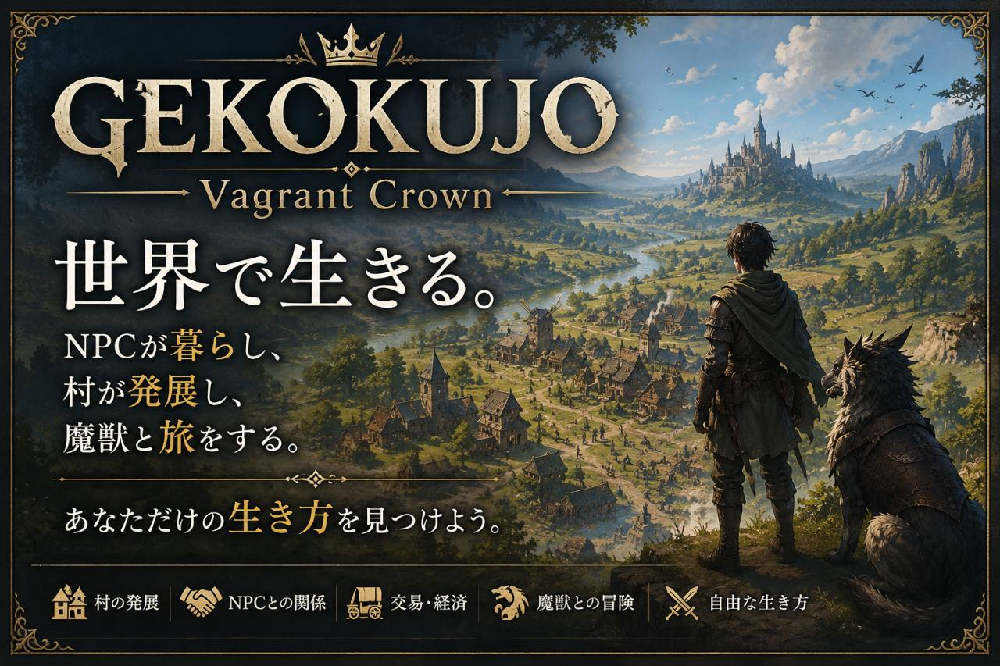

Companion
狼の相棒
プレイヤーは狼の相棒と共に辺境を旅します。共に道を歩み、共に困難に立ち向かうパートナーの存在が、この世界を旅する体験の軸になります。

Flagship Title — 注目作
狼の相棒と共に旅するLiving World RPG。NPCは記憶し、関係を築き、噂を広め、世界は絶えず変化していく——プレイヤーが立ち止まっていても、世界は動き続けます。自分だけの冒険を生きよう。
GEKOKUJO: Vagrant Crown — a Living World RPG where you travel with your wolf companion. NPCs remember, build relationships, and spread rumors as the world keeps changing. Even if you stand still, the world keeps moving. Live your own adventure. Now on Steam — wishlist available.
Overview
『GEKOKUJO: Vagrant Crown』は、Shirokuro Gamesが手がける、狼の相棒と共に旅するLiving World RPGです。オフラインのシングルプレイでありながら、オンラインのMMOのような「生きた社会」の手応えを目指すシミュレーションRPGを目指しています。
NPCはそれぞれ固有の記憶を持ち、プレイヤーとの関わりを通じて関係を築き、噂を広めていきます。プレイヤーが立ち止まっていても世界は動き続け、その中でプレイヤーは自分だけの冒険を生きていきます。
公式情報の読み方
Steamストアページは購入・ウィッシュリスト登録のための公式ストアです。本サイト（本ページ）では、ストアページだけでは伝えきれない設計意図や開発の背景を、開発記事・開発記録として詳しく解説しています。
World
Companion
プレイヤーは狼の相棒と共に辺境を旅します。共に道を歩み、共に困難に立ち向かうパートナーの存在が、この世界を旅する体験の軸になります。
Memory
村人・行商人・旅人といったNPCは、それぞれ固有の記憶を持ちます。プレイヤーとの関わりを覚え、関係を築き、出来事を噂として周囲に広げていきます。
Living World
「プレイヤーが立ち止まっていても、世界は動き続ける。」オフラインのシングルプレイでありながら、オンラインのMMOのような「生きた社会」の手応えを目指すのが本作のコンセプトです。
Experience
Travel
狼の相棒と共に辺境の地形を旅します。道・森・河川・山・橋といった地形ごとの移動を通じて、世界そのものを探索します。
Relate
出会うNPCとの関わりが記憶として積み重なり、関係を築いていきます。プレイヤーの行動は噂となって世界に広がっていきます。
Live
プレイヤーが目を離していても世界は動き続けます。ギルドでのクエスト受注や村での暮らしを通じて、自分だけの冒険を生きていきます。
Features
Gallery



Concept — Living World
「プレイヤーが立ち止まっていても、世界は動き続ける。」これが本作の開発コンセプトです。『GEKOKUJO: Vagrant Crown』は、オフラインのシングルプレイでありながら、オンラインのMMOのような「生きた社会」の手応えを目指すシミュレーションRPGです。
村人・行商人・旅人・野盗といった多数のNPCが、それぞれ固有の名前・性格・記憶を持ち、プレイヤーの目が届かない場所でも独自に行動し続けます。プレイヤーは狼の相棒と共に辺境を旅しながら、この「勝手に動き続ける世界」に関わり、自分だけの物語を紡いでいきます。
Even if you stand still, the world keeps moving. A single-player simulation RPG where many unique characters live autonomous lives — offline, but with the feel of a living online society.
Systems
Strategic Map
北の森林地帯を皮切りに、道・森・河川・山・橋といった地形ごとの移動ルールを持つマップを実装。移動ドットやミニマップ、イベントログ、噂・勢力情報の表示を通じて、辺境の地理そのものを攻略対象として描きます。
Pseudo-Player NPC
商人・旅人・敵対勢力などのNPCは、それぞれ目的地に向かって自律的に移動します。名前・性格・記憶・噂・行動傾向を持ち、プレイヤーとの接触や不在時の出来事が、後から噂として語られていきます。
Rumor & Record
プレイヤーが見聞きした噂はログに記録され、世界で起きた出来事や勢力の動きも記録として蓄積されます。誰が何をしたかが世界に残り続けることが、「生きた世界」の実感につながります。
Village & Guild
拠点となる「グレンビレッジ」では、会話・噂・ショップ・宿屋・情報屋・ギルドが利用可能。ギルドの掲示板からクエストを受注し、報酬を得る一連の流れに加え、疑似プレイヤーNPCによるクエスト参加の土台も実装しています。
Battle
ストラテジックマップ上でシームレスに発生する戦闘。HP表示、ダメージ処理、勝利・敗北・逃走の分岐を備え、鹿・狼・熊・野盗といった動物やモンスターとの索敵・追跡・戦闘開始までを地続きに体験できます。
Time & World
朝・昼・夕・夜と移り変わる時間帯ごとに環境音や雰囲気が変化。プレイヤーが待機している間も世界は時間経過とともに動き続け、地形ごとの足音や戦闘・クエストの演出音を含む音響設計で、地に足のついた中世ファンタジーの空気感を作っています。
Strategic map movement, autonomous pseudo-player NPCs with memory and rumor, guild quests, seamless battle, and a day/night world that keeps moving — the core systems already implemented.
Demo Focus
公開を予定しているプレイアブルデモは、物語の第1章「グレンビレッジ編」に焦点を当てています。村での生活、ギルドでのクエスト受注、周辺の森林地帯での探索と戦闘、噂を通じた世界の広がりまでを、まとまった一区画として遊べる形にまとめる予定です。
手動セーブ・オートセーブに対応し、日本語・英語・中国語のローカライズ対応も基盤として進めています。
The upcoming playable demo centers on Chapter 1: the Glen Village Arc — village life, guild quests, nearby forest exploration and battle, all within manual/auto save and JP/EN/CN localization foundations.
Roadmap
現在はSteamストアページを公開し、ウィッシュリスト登録を受け付けている段階です。並行して、グレンビレッジ編のプレイアブルデモに向けて、既存システム（ストラテジックマップ・NPC・戦闘・クエスト・時間経過）の接続と調整を進めています。
今後の開発記録は、Steamのデベロッパーアップデートと本サイトの更新情報の両方で、システム解説・進捗・スクリーンショットを交えて発信していく予定です。
Development Notes — 開発記録
Steamのデベロッパーアップデートに加え、本サイトでも設計の背景まで踏み込んだ独自の開発記事を公開しています。まずは以下の3本から、『GEKOKUJO: Vagrant Crown』が目指すLiving World RPGの考え方をご覧ください。
Original Article
プレイヤーが立ち止まっていても世界は動き続ける——このコンセプトに至った理由と、疑似プレイヤーNPCによる実装の考え方を解説します。
記事を読むOriginal Article
記憶・関係・噂という3層構造で、NPCがプレイヤーの行動をどう覚え、どう語り継いでいくのかを掘り下げます。
記事を読むOriginal Article
最初のプレイアブルデモが何を体験させるのか、そして現在の開発の重点とロードマップを整理しています。
記事を読む2026-07-10 / Steam開発ログ
Steamデベロッパーアップデートにて、これまでに実装された主要機能を一括で公開しました。北の森エリアを舞台としたストラテジックマップ、地形による移動速度や足音の変化、疑似プレイヤーNPCの自律行動・記憶・噂、動物や敵（鹿・狼・熊・野盗）の実装、ストラテジックマップ上でのシームレス風戦闘、村のギルド・クエストボード、噂やワールドイベントのログ化、朝昼夕夜の時間進行、日本語・英語・中国語のローカライズ基盤まで、幅広い進捗をまとめて紹介しています。
Steam開発ログを見る（開発アップデート/実装機能まとめ）2026-07-04 / Steam開発ログ
『GEKOKUJO: Vagrant Crown』のSteamストアページを公開し、ウィッシュリスト登録の受付を開始しました。開発コンセプトである「止まらない世界」を軸に、以降はシステム解説を中心とした開発記録を発信していきます。
SteamストアページSystems
ストラテジックマップでの移動と地形処理、疑似プレイヤーNPCの自律行動と記憶・噂、村とギルドでのクエストの受発注、シームレス風の戦闘、朝昼夕夜の時間シミュレーションまで、ゲームの骨格となるシステムを実装済みです。詳細は上記「生きた世界を支えるシステム」をご覧ください。
Next
次の目標は、これらのシステムを一つの遊べる区画として接続した、グレンビレッジ編のプレイアブルデモです。進捗はSteamデベロッパーアップデートと本サイトで随時共有します。
Steam
『GEKOKUJO: Vagrant Crown』のSteamストアページを公開しました。ウィッシュリスト登録を受付中です。応援いただけると発売の大きな後押しになります。
発売・配信に関する最新情報は、公式Discordと本サイトの更新情報でお知らせします。
The Steam store page is now live. Wishlist the game to support the launch.
News
読み込み中
Latest studio updates are loaded from the official news feed.